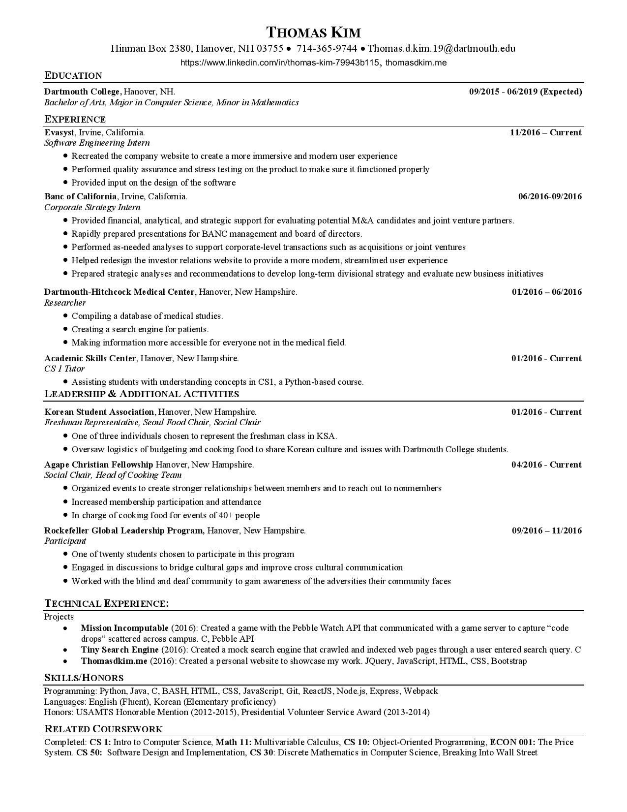

About Me
My Work
My Resume
Contact Me
About Me
I am currently a rising sophomore at Dartmouth College majoring in computer science with a potential minor in mathematics. Outside of school, I have an intense passion for food (both cooking and eating), fitness, growing in my faith, and making memories with my family and friends.
Home
I was born and raised in Southern California (Yorba Linda, California, to be exact), home to year round sunshine, amazing food, and terrible traffic. I attended Yorba Linda High School where I was involved with the men's tennis program all four years, mathletics (yes, it's a real thing), and other clubs here and there. Whenever I think back to high school, a rush of nostalgia hits me and a smile slowly emerges on my face. This was the good times before I knew they were the good times.
College
 I have since transitioned from sunny Southern California to snowy New Hampshire for college, and although it has been quite a transition, I
love every minute of it. I am lucky enough to be able to attend Dartmouth College as a member of the class of 2019 and it has been a place where I have grown and learned so much at my time here, and I know that I will grow and learn even more in my coming years here.
I have since transitioned from sunny Southern California to snowy New Hampshire for college, and although it has been quite a transition, I
love every minute of it. I am lucky enough to be able to attend Dartmouth College as a member of the class of 2019 and it has been a place where I have grown and learned so much at my time here, and I know that I will grow and learn even more in my coming years here.
Work Experience
 For the summer of 2016, I will be working as a Corporate Strategy Intern at the Banc of California located in Irvine, California. I will be working with the strategies department with financial analysts to assist in financial modelling.
For the summer of 2016, I will be working as a Corporate Strategy Intern at the Banc of California located in Irvine, California. I will be working with the strategies department with financial analysts to assist in financial modelling.
My Work
K-Means Image Processing

Graphical Editor

Huffman Encoding

Kevin Bacon Game

Artificial Intelligence Connect 4

Tiny Search Engine

The crawler is provided a seed URL and "crawls" through the seed URL to find any other web pages that are linked to it. The indexer uses the results of the crawler to generate an inverted index file that contains every word that was found in the web pages and the frequency of each word. Lastly, the querier handles search queries from the command line. Words that are searched together are handled with either a space or "AND" between the words, whereas words that must be searched separately are seprated with "OR" in between the words. Show less.
Mission Incomputable

There are three components to the game: a guide agent, a field agent, and a gameserver. The guide agent is the individual that walks around campus with the Pebble smartwatch and captures code and neutralizes other players. The guide agent provides the field agent with hints regarding the location of the code drops and other information. The game server holds all of the information of the game, such as the location of the code drops, location of both guide agents and field agents, and which team has captured the most code drops. Show less.
My Resume
Contact Me